Danmaku Studio 懶人包＋使用教學
本教學對應 v2.5 預覽版（2026/11/16）。第一部分是懶人包，第二部分是完整教學；下載請到 GitHub Releases。🧭 我遇到問題
第一部分：懶人包快速說明
只想看重點的看這部分就夠了；每個設定的詳細說明與截圖在第二部分。推薦提示
- 第一次用：選影片 → 選彈幕 → 設定輸出位置 → 按
● 立即壓制，其他全部用預設就能壓。 - 壓之前先按
✂ 試壓片段壓 10 秒看效果，滿意再整支壓。 - 彈幕少、全擠在上方 → 調大
行距 %（150～200），或把分布改成平均分散。 - 彈幕太多、疊成一團 → 開
防擋或高密度自動縮小，或到「過濾」頁設上限。 - 想保留所有彈幕 → 「過濾」頁按
★ 保留全部彈幕。 - 低解析度影片 →
放大倍率選 2，彈幕會清楚很多。 - 沒有彈幕檔 →
⬇ 下載彈幕，貼上 BV 號、ac 號、sn 號或 sm 號。 - 🔺 每個設定旁的
ⓘ都有說明，滑鼠移上去就看得到。
注意事項
- 要先裝好 Python、FFmpeg、Playwright，程式才能跑！！！
- 安裝指令：
pip install playwright、playwright install chromium、winget install -e --id Gyan.FFmpeg - GTX 10 系列（例如 1050）用 NVENC：驅動要 570～580，FFmpeg 用 8.0 以下的正式版，不要用最新開發版。
- 載入 ASS 字幕時，字體、大小都照檔案原樣，設定頁會全部鎖住；要改請用 Aegisub。
- 載入哪個網站的彈幕，就只能調那個網站的頁面，其他頁會變灰。
- SESSDATA、user_session、動畫瘋 Cookie 不要貼給別人或其他網站。
- 動畫瘋沒有記錄發送日期，「過濾 → 始點」對它無效。
- 全彈幕數萬條時壓制會很慢，CPU 會滿載，正常。
- 程式介面目前是繁體中文和英文；簡體系統也能正常顯示。
- N站下載、瀏覽器登入目前還在測試，出錯請把日誌貼到 GitHub。
常用快捷鍵
- 即時預覽播放器（瀏覽器）
- 空白鍵 播放／暫停（點一下畫面也可以）
- ← → 倒退／快轉 5 秒
- [ ] 切換倍速
- D 彈幕開關 H 顯示／隱藏彈幕數與 FPS F 全螢幕（雙擊畫面也可以）
- ASS 預覽（ffplay）：空白鍵 暫停 ← → 5 秒 ↑ ↓ 1 分鐘 9 0 音量 M 靜音 S 逐幀 F 全螢幕
- 程式視窗：下載網址欄 Enter 開始下載；提示視窗 Enter 按主要按鈕、Esc 關閉。
- 這個說明頁：/ 搜尋 ↑ ↓ 選結果 Enter 跳過去 Esc 清空
進階操作
- 多個彈幕檔合併：「追加彈幕 → 加入…」，同類型會合併、重複的自動去掉。
- 批量壓制：「工具箱 → 排程壓制」，每個任務可設核心數、第幾批；先按
檢查排程再開始排程。 - 定時、壓完關機：排程頁的「定時開始」「全部完成後」。
- 格式互轉：「工具箱 → 格式轉換」，XML、JSON、ASS 互轉，也能多檔合併。
- B站歷史彈幕：下載頁選「全彈幕（歷史）」，可設日期區間與每天冷卻；需要登入。
- N站往回抓：下載頁的「增量倍數」，需要登入 Niconico。
- 免複製 Cookie：按欄位旁的
🌐 登入，在跳出的瀏覽器登入就自動填好。 - 中斷了：開著
斷點續壓，用一樣的設定再壓一次就會接著做。 - 多組設定：標題列「我的預設」存檔、套用。
N站頁要另外勾選才能換字體（2.0 以後已合併成一頁）
組件整合列表
- 主要程式
- ☑ danmaku_studio.py <2.5>【主程式，tkinter 介面】
- ☑ Python <3.9 以上>【執行環境】
- ☑ FFmpeg／ffprobe／ffplay <必要>【編碼、讀影片資訊、ASS 預覽】
- ☑ Playwright＋Chromium <必要>【逐幀截圖、登入用瀏覽器；沒有 Chromium 會改用 Chrome／Edge】
- 內建引擎
- ☑ libass <FFmpeg 內建>【一般彈幕渲染，快】
- ☑ 排版引擎 <內建>【彈幕防重疊、行距、自動縮小】
- ☑ as3-danmaku <MIT>【B站程式碼彈幕 mode 8（原 Flash）】
- ☑ bas.js <第一次使用時下載>【B站 BAS 彈幕 mode 9】
- ☑ niconicomments <MIT>【Niconico 排版與彈幕藝術 CA】
- 支援的彈幕來源
- ☑ bilibili <XML、seg.so、BAS 專包>【普通、高級、程式碼、BAS 彈幕】
- ☑ AcFun <JSON 新舊版>【用 bilibili 頁的設定】
- ☑ 巴哈姆特動畫瘋 <XML、JSON>【每集最多約 3001 條】
- ☑ Niconico <XML、JSON>【官方規則數量、CA】
- ☑ ASS 字幕 <.ass>【照檔案原樣】
- 輸出格式
- ☑ 壓進影片 <MP4、MKV、MOV、AVI、GIF>【H.264／H.265，CPU 或 NVENC】
- ☑ 透明彈幕層 <ProRes 4444 .mov、WebM VP9>【給剪輯軟體疊在影片上】
- ☑ 彈幕檔 <B站／巴哈／N站 XML、JSON、ASS>【格式轉換工具】
- ☑ 丟棄清單、分析 CSV <.csv>【被擋掉的彈幕、每秒密度】
第二部分：完整使用教學
這是什麼工具
- 把 B站、AcFun、巴哈姆特動畫瘋、Niconico 的彈幕和 ASS 字幕壓進影片，高級彈幕、BAS、程式碼彈幕的特效完整保留。
- 作者：蔡星星のACG俱樂部（wow6666）與 AI 一起開發。
為什麼要壓進影片
- 用 bililocal 即時播放全彈幕，特殊彈幕、BAS 代碼彈幕很吃 CPU，影片會卡，甚至閃退。
- 為了顧及效能，很多華麗特效被省略，只剩平移的文字。
- 壓進影片後：播放順暢、特效完整。下面是同一支影片（sm212213，約 4 萬條彈幕）的對比：
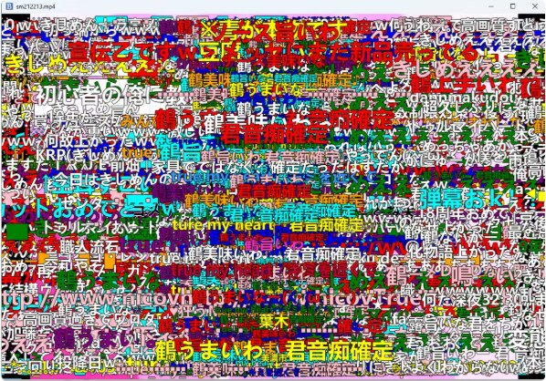

為什麼不轉 ASS 就好
- DanmakuFactory 這類工具對特殊格式支援不佳，轉檔常失敗，或特效直接被吃掉。
- 本工具改成：在瀏覽器把彈幕畫出來、逐幀截圖，再用 FFmpeg 疊到影片上，CSS 特效與字體排版都能原樣保留。
混合渲染（速度的關鍵）
- 一般彈幕：瀏覽器只量字寬、排位置，畫面交給 FFmpeg 的 libass。
- 高級彈幕（mode 7）、程式碼彈幕（mode 8，原 Flash）、BAS（mode 9）、N站彈幕藝術（CA）：才開瀏覽器逐幀截圖。
- 影片切成 10～60 秒一段，多核心同時渲染，再無損合併；可斷點續壓。
安裝與環境
- 要先裝好 Python、FFmpeg、Playwright，程式才能跑！！！
- Python 3.9 以上：到 python.org 下載，安裝時勾選「Add python.exe to PATH」。
- Playwright 與瀏覽器：
pip install playwright playwright install chromium
沒裝 Chromium 時會改用電腦上的 Chrome 或 Edge。 - FFmpeg（含 ffprobe、ffplay）：
winget install -e --id Gyan.FFmpeg
裝完重開命令列，輸入ffmpeg -version看得到版本就成功。 - 執行：
python danmaku_studio.py - 🔺 GTX 10 系列（例如 GTX 1050）用 NVENC：驅動最高只到 580 版。請更新到 570～580，並用 FFmpeg 8.0 以下的正式版；最新開發版需要 610 版驅動，10 系列裝不上。可在「輸出 → 編碼器 → 測試」看原因。
- 作者測試環境：Intel Core i7-9700、DDR4 16GB、GTX 1050、Windows 11 25H2。
五步驟快速上手
- 選檔案：上方「彈幕獲取」選影片、彈幕檔、輸出位置。載入後綠字會顯示類型和數量（例如「B站 XML：滾動 60、程式碼 3」）。沒有彈幕檔按
⬇ 下載彈幕。 - 調設定：程式會自動判斷來源，只開放對應的頁面（B站／AcFun、動畫瘋、Niconico），其他頁變灰鎖住。
- 預覽：
▶ 即時預覽在瀏覽器看效果，或🖼 單幀預覽看某一秒。 - 試壓：
✂ 試壓片段選幾秒到幾秒，壓成 MP4 或 GIF 確認。 - 壓制：
● 立即壓制；要停按■ 全部停止，開著斷點續壓的話下次會接著做。

介面導覽
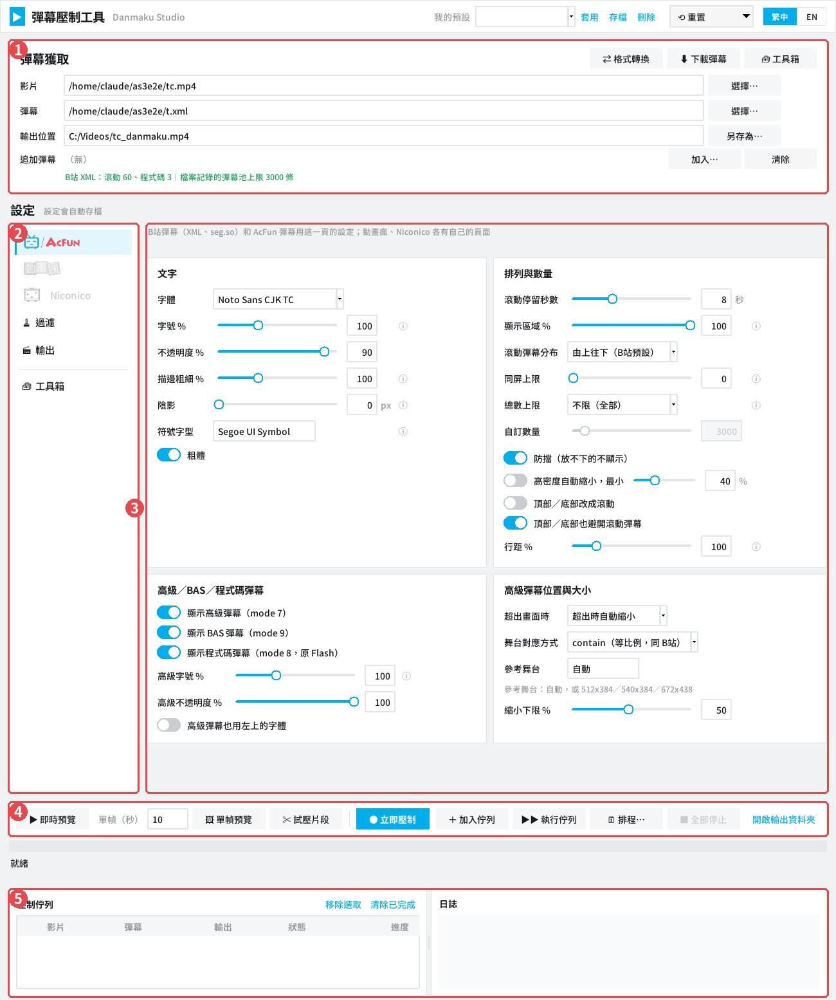
- 標題列：左上 ▶ 圖示點一下是版本資訊；右邊有「我的預設」（存多組設定）、
⟲ 重置、繁中／EN 切換。 - ① 彈幕獲取：影片、彈幕、輸出位置、追加彈幕（多檔合併）；右上有格式轉換、下載彈幕、工具箱捷徑。
- ② 設定側邊欄：bilibili／AcFun、動畫瘋、Niconico、過濾、輸出、工具箱；設定會自動存檔。
- ④ 動作列：即時預覽、單幀預覽、試壓片段、立即壓制、加入佇列、執行佇列、排程、全部停止、開啟輸出資料夾。
- ⑤ 佇列與日誌：狀態、進度、即時 FPS、預估剩餘；日誌寫出每一步和彈幕被擋的原因。
- ⟲ 重置選單：清除檔案路徑、清除登入 Cookie、登出並刪除登入用瀏覽器資料、全部設定恢復預設。

bilibili／AcFun 頁
- B站 XML、B站 protobuf（seg.so）、AcFun 彈幕都用這一頁。

- ① 字號 %：100 = 原站大小；0 = 隱藏一般彈幕。
- ② 描邊粗細 %：100 = B站預設（字號的 1/22）；0 = 不描邊。
- ③ 陰影：以 1080p 為準的像素，照影片高度縮放。
- 符號字型：☢★♪ 變方框時用來補字。
- 滾動停留秒數、顯示區域 %（50 = 只用上半部）。
- ④ 滾動彈幕分布：由上往下（B站預設）／平均分散。
- 同屏上限、總數上限（不限／依檔案的彈幕池上限／自訂數量）。
- ⑤ 防擋（放不下的不顯示）、高密度自動縮小、頂部／底部改成滾動、頂部／底部也避開滾動彈幕。
- ⑥ 行距 %（50～300）：彈幕少、全擠在上方時調到 150～200；低於 100 會更緊密。
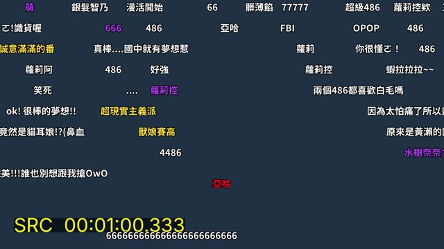
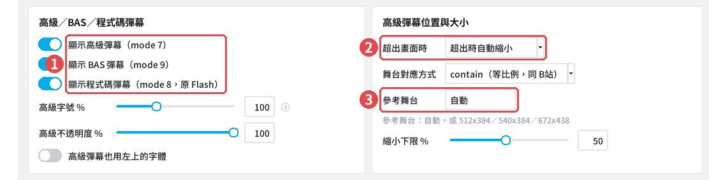
- ① 開關：分別顯示或隱藏高級彈幕（mode 7）、BAS（mode 9）、程式碼彈幕（mode 8，原 Flash）；高級字號 %、高級不透明度 %。
- ② 超出畫面時：縮小並移入畫面，可設縮小下限。
- ③ 參考舞台：建議「自動」；也可指定 512x384、540x384、672x438。
- 字號換算標準：
- B站／AcFun／動畫瘋：字號 × 1.6 × (影片高 ÷ 1080) × 字號 %，
1080p 字號 25 = 40 px。 - 動畫瘋：本程式下載的存成 18／25／36（小／中／大）；油猴腳本存的一律是 25。
- B站高級彈幕：原始字號 × 舞台縮放 × 高級字號 %（672×438 舞台到 1080p 約 ×2.47）。
- Niconico：384 px 高的舞台，小／中／大 = 18／27／39 px，再等比放大（1080p 約 ×2.81）。
- B站／AcFun／動畫瘋：字號 × 1.6 × (影片高 ÷ 1080) × 字號 %，
動畫瘋頁

- 巴哈姆特動畫瘋的彈幕只用這一頁，跟 B站分開調。
- 檔案有記錄：出現時間（0.1 秒）、位置、顏色、發送者帳號。
- 沒有發送日期 → 「過濾 → 始點」無效；「總數上限」改成平均挑選。
- 每集伺服器最多回傳約 3001 條。
Niconico 頁
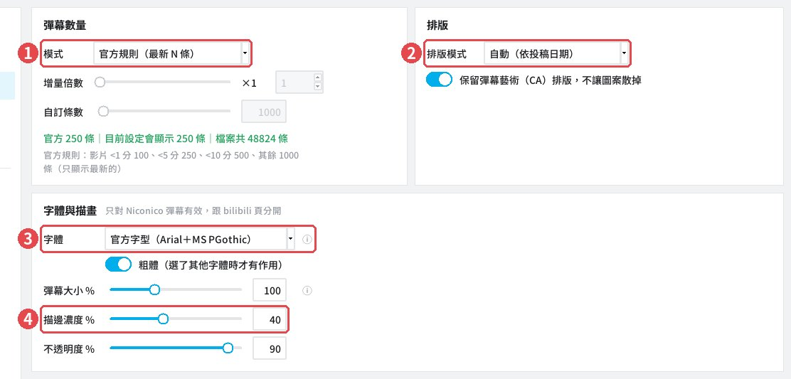
- 用開源庫 niconicomments 排版，照官方播放器規則，彈幕藝術（CA）不會散掉。
- ① 彈幕數量：官方規則（影片 <1 分 100、<5 分 250、<10 分 500、其餘 1000 條，只顯示最新的）／增量倍數（官方 × N）／自訂數量／全部彈幕。
- ② 排版模式：自動（依投稿日期）／HTML5（新版播放器）／Flash（舊版播放器）。
- ③ 字體：預設「官方字型（Arial＋MS PGothic）」；選其他字體時才能用粗體。
- ④ 描邊濃度 %、彈幕大小 %、不透明度 %。
N站字體要另外勾選、切到另一頁調（2.0 以後已合併成一頁）- 示範影片：sm212213「true my heart」，約 4 萬條彈幕。
過濾頁
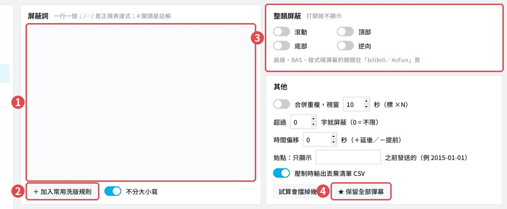
- ① 屏蔽詞：一行一個；
/…/是正規表達式；#開頭是註解。 - ② 加入常用洗版規則：純標點、同字重複、片段重複。
- ③ 整類屏蔽：滾動、頂部、底部、逆向。
- 合併重複（標 ×N）、字數上限、時間偏移、始點（只顯示某日期之前發送的）。
試算會擋掉幾條先看結果；④ 保留全部彈幕 一鍵關掉所有會丟彈幕的設定。- 壓制時可輸出「丟棄清單 CSV」，列出每條被擋的彈幕和原因。
輸出頁

- ① 輸出類型：壓進影片／透明彈幕層（ProRes 4444 .mov、WebM VP9）。選透明彈幕層時「檔案格式」會鎖住。
- 放大倍率：低解析度影片選 2，彈幕更清楚。
- 倍速：彈幕出現時間跟影片同步；② 打開後彈幕停留時間也跟著縮短。
- ③ 檔案格式：MP4、MKV、MOV、AVI、GIF。AVI 只能放 H.264；GIF 沒有聲音、檔案大，可調寬度和幀率。
- ④ 編碼器：H.264／H.265（CPU 或 NVENC）；
測試說明無法使用的原因。 - CRF：越小越清晰，18 約等於無損。同時渲染數：通常設 CPU 核心數的一半。
- ⑤ 斷點續壓：分段存在
C:\Users\你的帳號\.danmaku_studio\work\，重開機不會消失；暫存在哪裡？可打開資料夾。 - ⑥ NVENC 同時路數：GTX 1050 這類 2GB 顯卡建議 1～2。

預覽與試壓
- 即時預覽：瀏覽器播放，B站風格控制列（倍速、±5 秒、音量、全螢幕、彈幕開關、不透明度），進度條上有彈幕密度曲線，旁邊顯示彈幕數和 FPS。
- ASS 預覽：用 ffplay 播放，快捷鍵寫在視窗標題。
- 單幀預覽：看某一秒，可 ±1／±5 秒切換，
另存為…存 PNG 或 JPG。 - 試壓片段：用目前所有設定壓指定秒數成 MP4 或 GIF，完成後可播放、另存；只有片段和格式由試壓視窗決定。

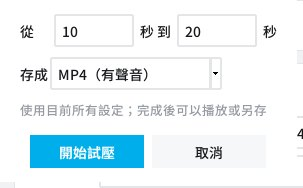
彈幕下載
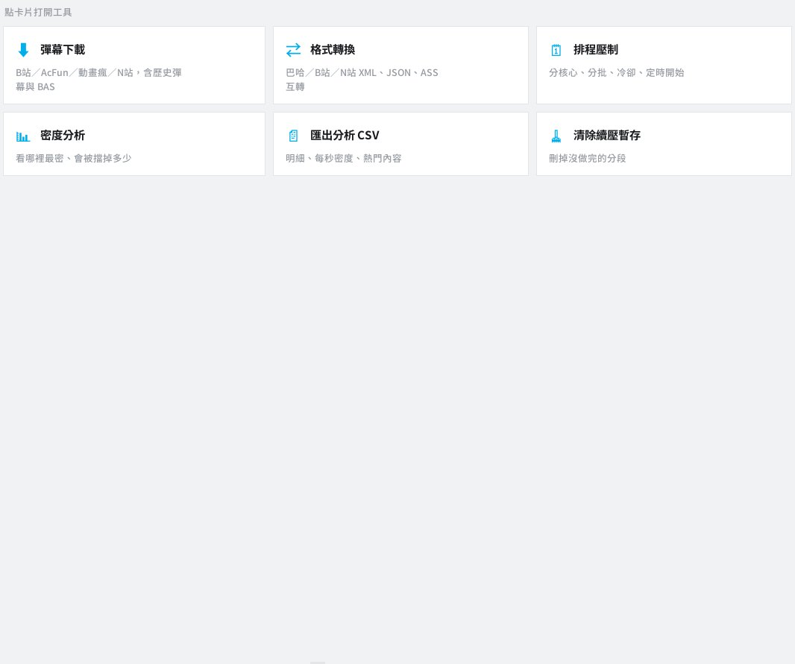

- 貼上網址或編號，網站自動判斷，也可用 ① 網站 下拉選單切換。
- bilibili：BV／av 號或網址（多 P 加
?p=2）。② 範圍 可選目前彈幕池或全彈幕（歷史彈幕逐日合併）；全彈幕與 BAS／程式碼專包要 SESSDATA。- ③ 歷史彈幕可設日期區間、最多天數、每天抓完冷卻；中途失敗會保留已抓到的。
- AcFun：ac 號或網址，不用登入。
- 動畫瘋：sn 號或網址，最多約 3001 條；登入後彈幕可能更多。
- ④ 最多保留（四站共用）＋ ⑤ 超過時：平均隨機刪，或削峰（只刪密度高的時段）；可在存檔前套用「過濾」頁；N站投稿者彈幕不算在上限。
- ⑥ Cookie 過期時：見 登入與 Cookie。
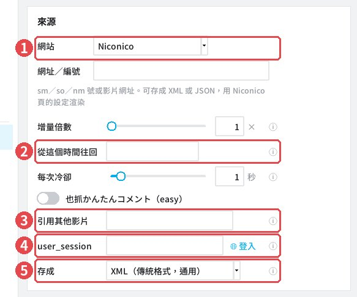
- Niconico（測試中）：sm／so／nm 號或網址。
- ① 做法照「コメント増量」：登入後每個 thread 往回抓 N 次，每次最多 1000 條。
- ② 指定從哪個時間往回抓；③ 把別支影片的彈幕也加進來（例如
sm9×2）；可選是否抓かんたんコメント。 - 碰到 429（請求太多）會自動等待並放慢；⑤ 存成 XML 或 JSON。
格式轉換
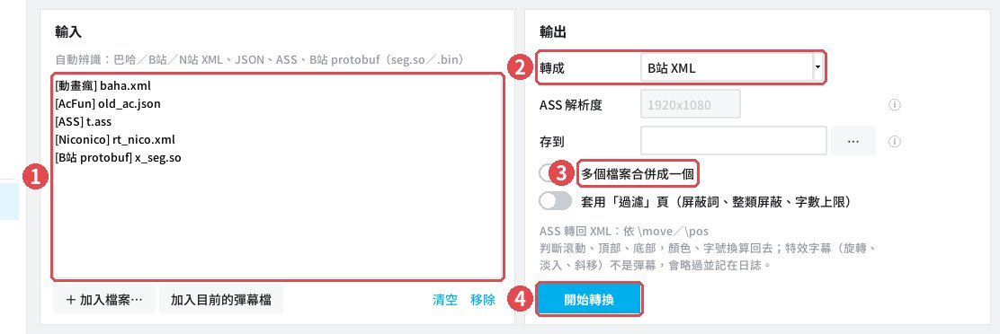
- 讀取：巴哈／B站／N站 XML、JSON（AcFun 新舊版、動畫瘋、Niconico、本程式通用格式）、ASS、B站 protobuf（seg.so／.bin）。
- 輸出：B站 XML、巴哈 XML、N站 XML、JSON（測試中）、ASS。
- ASS 轉回 XML：依
\move／\pos判斷滾動、頂部、底部；旋轉、淡入、斜移這類特效字幕會略過並記在日誌。 - 轉成 ASS：字體、排列用設定各頁的值，解析度自己填（例如
1920x1080）。 - ③ 多檔合併只合併內容，無法分別調整各檔的時間偏移。
- 可勾「套用過濾頁」一起擋掉不要的彈幕。
排程壓制
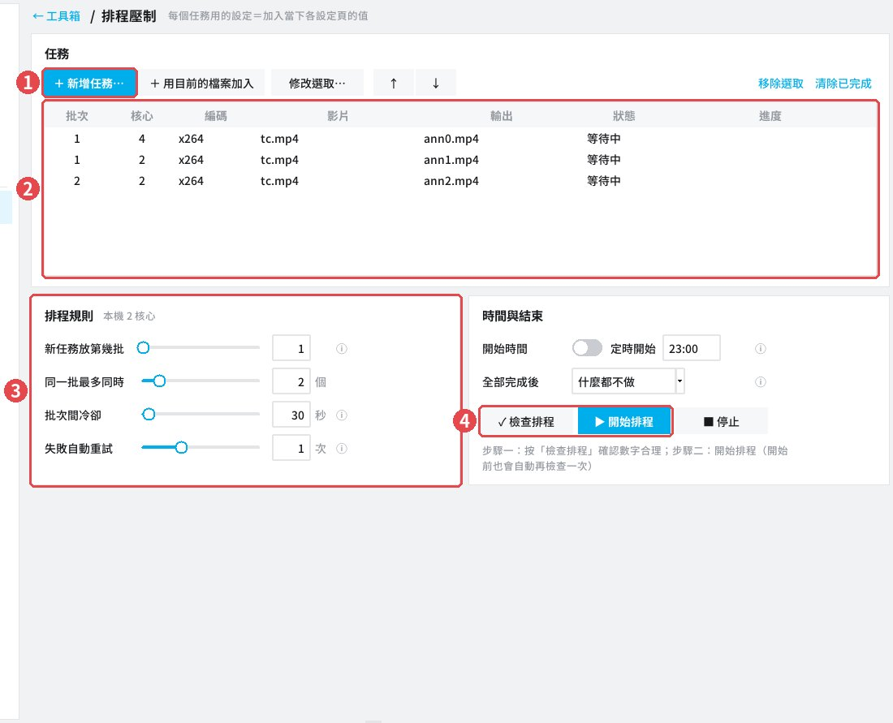
- ① 加入任務：
＋新增任務…選檔案、核心數、第幾批、編碼器；或「用目前的檔案加入」。其他設定沿用各設定頁當下的值。 - ③ 設定規則：同一批最多同時幾個、批次間冷卻幾秒、失敗自動重試、定時開始、全部完成後睡眠／關機（關機前 60 秒可用
shutdown /a取消）。 - ④ 檢查排程：只檢查數字和檔案（找不到檔案、輸出撞名、核心超過本機、NVENC 太多路）。
- ④ 開始排程：開始前會再自動檢查一次，有錯不會開始；一批做完、冷卻後才開始下一批。

登入與 Cookie
🌐 登入（測試中）：在跳出的專用瀏覽器登入一次，程式自動填好 Cookie，不用開 F12 複製。- 這個瀏覽器跟你平常的 Chrome 分開；登入狀態存在
.danmaku_studio\browser_login，用「⟲ 重置 → 登出並刪除登入用瀏覽器資料」清除。 - Cookie 本身只放在記憶體，不寫進設定檔。
- SESSDATA、user_session、BAHARUNE 不要貼給別人或第三方網站！
- Cookie 過期時（下載頁可選）：
- 先在背景自動續期，不行再問我（預設）
- 直接開瀏覽器讓我重新登入
- 每次都問我（用瀏覽器登入／自己貼上／取消）
- 直接要我貼新的
- 停下來，已抓到的存檔
常見問題
- NVENC 不能用？ 按「輸出 → 編碼器 → 測試」看原因；GTX 10 系列用 570～580 版驅動＋FFmpeg 8.0 以下正式版，同時路數設 1～2。無法使用時會自動改用 CPU。
- N站下載一直 429？ 每次冷卻調到 3～5 秒、增量倍數調小分幾次抓、不要同時用コメント増量、等 10～30 分鐘再試。
- 載入 ASS 後設定頁都鎖住？ ASS 的字體大小寫死在檔案裡，照原樣顯示；要改請用 Aegisub。
- 「認不出這個彈幕格式」？ 會先當成 B站彈幕處理，可能讀不到或排版不對；先試壓確認，或先用格式轉換轉成 B站 XML。
- 全彈幕還是疊在一起？ 數萬條時放不下是正常的：開防擋、高密度自動縮小、降低行距，或設總數上限。
- 彈幕全擠在上方？ 行距調 150～200，或分布改「平均分散」。
- seg.so 說「已損壞」？ 檔案被當成文字存過，無法還原；用「工具箱 → 彈幕下載」重新下載，不要從開發者工具複製回應貼到記事本。
- 暫存佔空間？ 在
.danmaku_studio\work\，壓完自動刪；沒做完的可用「工具箱 → 清除續壓暫存」。 - 中國大陸的電腦能正常顯示嗎？ 可以。程式用 Unicode，微軟雅黑、黑體都有繁體字。
- 已知問題：
- N站下載、瀏覽器登入、NVENC 尚未在真實環境完整驗證，出錯請把日誌貼到 GitHub。
- AcFun 自己格式的高級彈幕（mode 7）目前略過。
- JSON 輸出仍在測試。
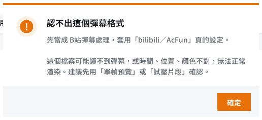
版本紀錄
- 2.5 預覽版 <2026/11/16>
- 修正：不適用的設定頁正確鎖住並變灰；視窗名稱改為「彈幕壓制工具 Danmaku Studio」，點左上角看版本資訊；NVENC 無法使用時說明原因。
- 新增：工具箱、滑桿、新提示視窗；描邊、陰影、行距、字號可設 0；倍速停留時間開關；MP4／MKV／MOV／AVI／GIF；單幀另存、試壓片段；四站下載（含 N站測試版、B站日期區間、統一上限與削峰）；瀏覽器登入與 Cookie 過期處理；格式互轉；排程壓制。
- 2.0 正式版 <2026/11/15>
- 支援 mode 8 程式碼彈幕（as3-danmaku 引擎）；支援 B站 protobuf（seg.so、BAS 專包 .bin），偵測被存成文字的損壞檔。
- B站（普通、專包、全彈幕）、AcFun、動畫瘋下載。
- 防重疊重寫：參考動畫瘋防重疊腳本；滾動與頂部／底部互相避開。
- BAS 疊影修正、即時預覽省記憶體、沒有發送時間的檔案改平均挑選。
- 介面大改：開關、繁中／EN、上下兩段排版、來源圖示側邊欄、重置選單；即時預覽改成 B站風格控制列。
- 1.0 正式版 <2026/11/14>
- 第一個版本：瀏覽器渲染截圖＋FFmpeg 疊合，支援 B站 XML（含高級彈幕、BAS）、Niconico XML、ASS；混合渲染、多核心、斷點續壓、屏蔽與分類。
1.0已停止支援，請直接使用 2.0 以後的版本。
其它
- ☑ GitHub Releases【各版本下載】
- ☑ 作者的 B站專欄【特殊彈幕視頻壓制解決方案】
- ☑ niconicomments <MIT>【Niconico 排版與描畫】
- ☑ as3-danmaku（Bilibili-Old-Player） <MIT>【B站程式碼彈幕 mode 8】
- ☑ BAS【B站 BAS 彈幕 mode 9】
- ☑ コメント増量 <MIT>【Niconico 下載、增量往回抓的做法】
- ☑ danmu2ass【XML 轉 ASS 尺寸換算的參考】
- ☑ 動畫瘋彈幕防重疊（anigamerDanmakuFix）【防重疊排列】
- ☑ acfundanmu【AcFun 彈幕 API】
- ☑ bilibili-API-collect【B站 API、protobuf 欄位】
- ☑ 帰ってきたニコニコからコメントを取得する【N站彈幕 API】
- ☑ FFmpeg／libass、Playwright／Chromium【編碼、字幕渲染、瀏覽器截圖】
- 🔺 想取得 Niconico 全彈幕，可以研究 air.fem.jp/commeon/ 這個工具。
- 🔺 本工具與教學由作者與 AI 一起完成，程式或文章有錯歡迎到 GitHub 提出，也可以自由修改程式碼。